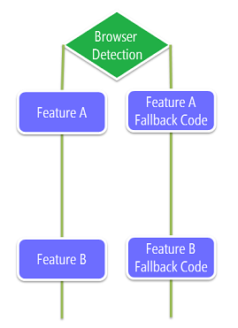
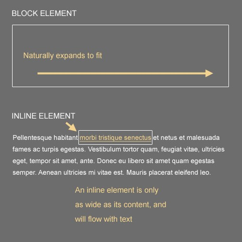
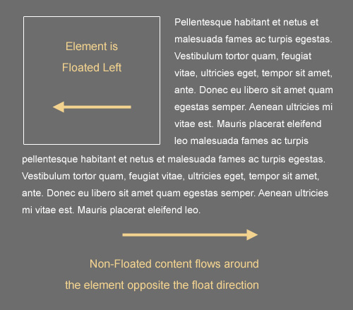

Cross Browser Compatibility Overview
Cross Browser Challenges
- Many different browsers
- Many different versions
- New version releases frequently
Cross Browser issue overview
- layout
- function
- performance
layout
- Html/css
- Html5/css3
function
- DOM
- JavaScript Core
- BOM
- Addon/ActiveX
performance
- Render Engine
- Script Engine
- Network
Categorizing features in web platform
- Interoperable and stable - Supported in all the latest browsers; not likely to change in the future
- Legacy - Replaced by interoperable features; May be removed in the future
- New - Supported in some browsers; Inconsistent implementations
Concepts
- Responsive Design
- Polyfill/shims
- Feature detection vs Browser detection
- Graceful degradation vs Progressive enhancement
Responsive Design
- Responsive web design (RWD) is aimed at crafting sites to provide an optimal viewing experienceeasy reading and navigation with a minimum of resizing, panning, and scrollingacross a wide range of devices (from mobile phones to desktop computer monitors).
- Media Queries
- Fluid grid
- Flexible images
Media Queries
- Media Queries is a CSS3 module allowing content rendering to adapt to conditions such as screen resolution.
- @media screen and (min-width:500px) { ... }
- http://caniuse.com/#feat=css-mediaqueries
- http://en.wikipedia.org/wiki/Media_queries
Fluid Grid
- The fluid grid concept calls for page element sizing to be in relative units like percentages, rather than absolute units like pixels or points.
- http://getbootstrap.com/2.3.2/scaffolding.html#fluidGridSystem
Flexible images
- Flexible images are also sized in relative units, so as to prevent them from displaying outside their containing element.
- http://alistapart.com/article/fluid-images
Polyfill
- In web development, a polyfill (or polyfiller) is downloadable code which provides facilities that are not built into a web browser.
- http://en.wikipedia.org/wiki/Polyfill
- https://github.com/Modernizr/Modernizr/wiki/HTML5-Cross-browser-Polyfills
- http://html5please.com/
Browser Detection
Browser detection (also known as Browser sniffing) is a set of techniques used in websites and web applications in order to determine the web browser a visitor is using, and to serve browser-appropriate content to the visitor.
Feature Detection
Feature detection (also feature testing) is a technique used in web development for handling differences between runtime environments (typically web browsers or user agents), by programmatically testing for clues that the environment may or may not offer certain functionality.

Graceful degradation
- Graceful degradation, also known as Fault tolerance is a concept of building a web site or application so it provides a good level of user experience in modern browsers.
- However, it will degrade gracefully for those using older browsers. The system may not be as pleasant or as pretty, but the basic functionality will work on older systems.
- https://docs.webplatform.org/wiki/concepts/graceful_degradation
Progressive enhancement
- In practical terms, its easiest to break the concept of PE into different layers, each one building on the previous to improve the experience of interacting with the website.
Core CSS Concept
CSS Selectors
CSS Units
CSS box model
- CSS box model responsibility
- How much space a block-level element takes up
- Whether or not borders and/or margins overlap, or collapse
- A boxs dimensions
- To some extent, a boxs position relative to other content on the page
CSS box model rule
- Block-level elements are essentially rectangular
- The dimensions of a block element are calculated by width, height, padding, borders, and margins
- If no height is specified, a block element will be as high as the content it contains, plus padding (unless there are floats, for which see below)
- If no width is specified, a non-floated box will expand to fit the width of its parent minus padding
Block vs Inline
Blocking and inline rules
- Block elements will, by default, naturally expand horizontally to fill their parent container, so theres no need to set a width of 100%
- Block elements will, by default, begin at the leftmost edge of the parent box, below any previous block elements (unless floats or positioned elements are utilized)
- Inline elements will ignore width and height settings
- Inline elements flow with text, and are subject to typographical properties such as white-space, font-size, and letter-spacing
- Inline elements can be aligned using the vertical-align property, but block elements cannot
- Inline elements will have some natural space below them in order to accommodate text elements that drop below the line (like the letter g)
- An inline element will become a block element if it is floated
Floating and Clearing
Floating and clearing rules
- Floated elements are removed from the flow of other block-level, non-floated elements; so in other words, if you float a box left, a trailing paragraph (block level) thats not floated will appear behind the float in the stack, and any text inside the paragraph (inline level) will flow around the float
- To get content to flow around a floated element, it must be either inline or else floated in the same direction
- A floated element without a declared width will shrink to the width of its content, so its generally best to have a set width on a float
- If a block element contains floated children, it will collapse, requiring a fix
- An element thats cleared will avoid flowing around floated elements above them in the document
- An element thats both cleared and floated will only clear itself of elements that come before, not after
Common problems of IE
- IE6 will become problematic if floats are overused, causing (paradoxically) disappearing content or duplicate text
- IE6 will double the margin on floated elements on the side that is the same direction as the float; setting display: inline will often fix this
- In IE6 and IE7, if an element doesnt have layout, it can cause a number of problems, including backgrounds not showing up, margins collapsing improperly, and more
- IE6 does not support min- and max-based CSS properties like min-height, or max-width
- IE6 does not support fixed positioning of background images
- IE6 and IE7 do not support many alternate values for the display property (e.g. inline-table, table-cell, table-row, etc.)
- You cannot use the :hover pseudo-class on any element in IE6 except an anchor
- Certain versions of IE have little support for certain CSS selectors (e.g. attribute selectors, child selectors, etc.)
- IE versions 6-8 have little support for CSS3, but there are some workarounds